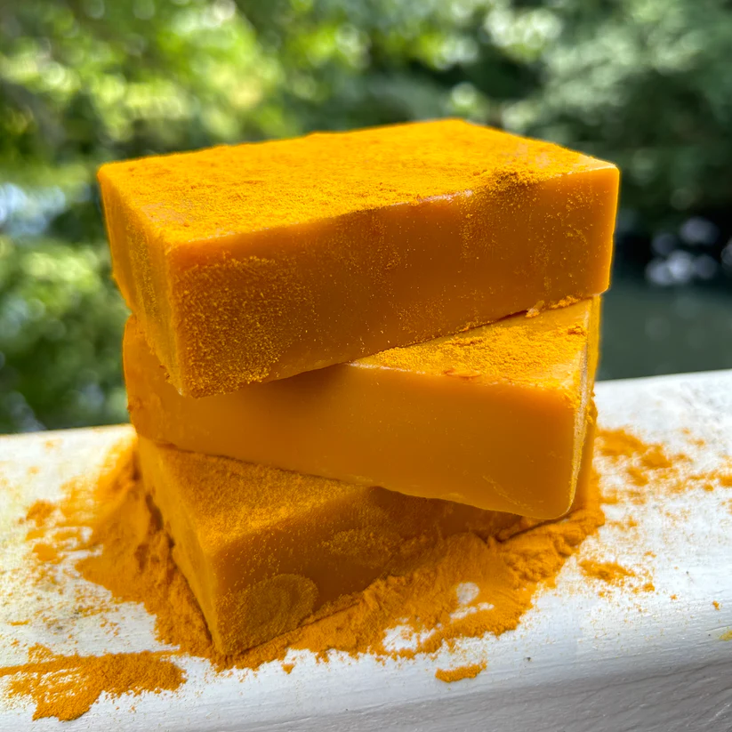

Lavender Delight
100% Natural Pure Vegan Homemade Soap with fresh Lavender on top.
$4.58

Cucumber Melon
Fresh cucumber scent with a melon fusion
$3.99

Apple Spice
Apple cinnamon scent goat milk soap
$4.58

Pumpkin Spice
Fall Pumpkin Chai Latte Soap
$5.01

Wildflower Honeycomb
Floral cold process soap
$4.99

Apple Pie Delight
Apple inspired soap design
$4.58

Lemon Lavender Love
Lemon lavender all natural soap made with organic ingredients
$4.58

Turmeric Twist
turmeric and oat soap made with oragnic product that can be used for
hyperpigmentation
$4.58

Blueberry Thmye
Organic blueberry and thyme goat milk soap
$4.58